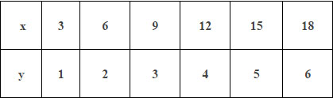
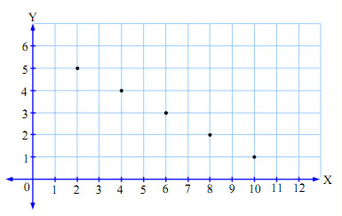
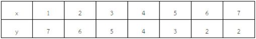
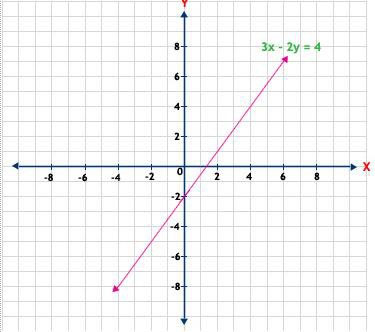
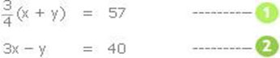
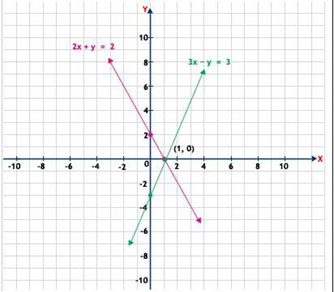

2.1กราฟแสดงความสัมพันธ์ระหว่างปริมาณที่มีความสัมพันธ์เชิงเส้น
ปริมาณที่มีความสัมพันธ์เชิงเส้น คือปริมาณของสิ่งที่มีความสัมพันธ์เกี่ยวข้องกัน สามารถนำมาเขียนเป็นคู่อันดับ (x, y) จึงนำไปสู่การแสดงได้ด้วยกราฟ
แกนของกราฟ ประกอบด้วยแกน 2 แกนตั้งฉากคือ
แกนนอนเรียกว่า แกน y
แกนตั้งเรียกว่า แกน x
การกำหนดค่าบนแกนทั้งสอง เป็นตัวเลขโดยให้ระยะห่าง 1 หน่วยเท่าๆ กันคู่อันดับ (co-ordinate) หมายถึงจำนวนหรือตัวเลขสองตัวมาอยู่คู่กัน (1,5) หมายถึงค่าบนแกน x =1 ค่าบนแกน y =5
ตัวอย่าง แสงเดินทางในอากาศได้เร็วกว่าเสียง เราจึงเห็นฟ้าแลบก่อนเสียงฟ้าผ่า เสมอ หากสถานเกิดเหตุฟ้าผ่าอยู่ห่างจากตัวเราทุกๆ 1 กิโลเมตรจะได้ยินเสียงฟ้าผ่าหลังฟ้าแลบไปแล้ว 3วินาที
ให้ x แทนเวลาเป็นวินาทีที่ได้ยินเสียงฟ้าผ่าหลังจากเห็นฟ้าแลบ
y แทนระยะทางเป็นกิโลเมตรที่สถานที่เกิดฟ้าผ่าอยู่ห่างจากผู้สังเกต
จงเขียนกราฟแสดงระยะทางที่สถานที่เกิดเหตุอยู่ห่างจากผู้สังเกต เมื่อได้ยินเสียงฟ้าผ่าหลังจากเห็นฟ้าแลบในเวลาต่างๆกัน
วิธีทำ
คู่อันดับทั้งหมดจะอยู่ในแนวเดียวกับเส้นสีน้ำเงินนั้นคือเรียงในแนวเส้นตรงเดียวกัน
ตัวอย่าง จงเขียนกราฟแสดงความสัมพันธ์ระหว่างปริมาณในแต่ละข้อ ต่อไปนี้ความสัมพันธ์ที่กำหนดให้ เป็นความสัมพันธ์เชิงเส้นหรือไม่
1) สองเท่าของจำนวนนับจำนวนหนึ่งบวกกับอีกจำนวนหนึ่งแล้วได้12
วิธีทำ จากโจทย์เราจะสามารถแทน ให้อยู่ในรูปของสมการได้ไหม ก่อน
ให้ X และ Y เป็นจำนวนนับ
ดังนั้น สองเท่าของจำนวนนับจำนวนหนึ่งแทนด้วย2X บวกกับอีกจำนวนหนึ่งแล้วได้12
เราจะได้สมการ 2X + Y = 12
Y = - 2X + 12
ดังนั้น เราดูสมการดังกล่าวอยู่ในรูปสมการเส้นตรง คือ Y = mX + c
เมื่อ m เป็นความชัน และ c เป็นค่าคงที่ ได้ m = -2 และ c = 12
ดังนั้น สมการดังกล่าวเป็นความสัมพันธ์เชิงเส้น
สามารถวาดรูปกราฟก็ได้โดยแทนค่า x = 2,4,6,8,10
ก็จะได้ค่า y ออกมาดังนี้เท่ากับ y = 5,4,3,2,1
x = 2, y = 5 = (2,5)
x =4, y = 4 = (4,4)
x =6, y = 3 = (6,3)
x =8, y = 2 = (8,2)
x =10, y = 1 = (10,1)
นำไปวาดกราฟ ก็จะได้กราฟเส้นตรงเช่นเดียวกัน
2.2กราฟของสมการเชิงเส้นสองตัวแปร
จากการที่ได้เรียนเรื่องสมการเชิงเส้นตัวแปรเดียวมาแล้วจะพบว่าประโยค "สองเท่าของจำนวนจำ นวนหนึ่งบวกด้วย 3 เท่ากบั 7" เมื่อกำหนดให้x แทนจำนวนนั้น เราสามารถเขียนประโยคข้างต้นเป็นประโยคสัญลักษณ์ ได้เป็น 2x+3 = 7
เราเรียกประโยคสัญลักษณ์ 2x+3 =7 ว่าสมการเชิงเส้นตัวแปรเดียว จะสังเกตเห็นว่าเป็นสมการที่มีตัวแปรหนึ่งตัว คือ ตัวแปร x และเลขชี้กำลังของตัวแปรเป็น 1
มุมความคิด
เรียกสมการที่อยู่ในรูป Ax + By + C = 0 เมื่อ A, B และ C เป็นค่าคงตัวที่A และ B ไม่เท่ากับศูนย์พร้อมกันและx, y เป็นสมการเชิงเส้นสองตัวแปร
กล่าวได้ว่าสมการเชิงเส้นสองตัวแปรเป็นสมการที่มีลักษณะสำคัญดังนี้
1.มีตัวแปรสองตัว
2.ตัวแปรแต่ละตัวมีเลขชี้กำลังเท่ากับ 1
3.ไม่มีการคูณของตัวแปร
จากสมการ Ax+ By+ C = 0 เมื่อ A, B และ C เป็นค่าคงตัว เมื่อ A ≠ 0 และ B ≠ 0 และ x, y เป็นตัวแปรในการนำไปใช้อาจจัดรูปของสมการใหม่ ดังนี้
จากสมการ Ax+ By+ C = 0
Ax+ By = -C
ถ้าให้ - C ซึ่งเป็นค่าคงตัวเท่ากับ c
จะได้ ax + by = c
นั้นคือ สมการเชิงเส้นสองตัวแปรเขียนในรูป ax + by = c เมื่อ a, b และ c เป็นค่าคงตัวที่a และ bไม่เท่ากับศูนย์พร้อมกัน และx, y เป็นตัวแปร
คำตอบของสมการเชิงเส้นสองตัวแปร
จากที่เราได้ทราบมาแล้วว่าสมการ2x+3 = 7 เป็นสมการเชิงเส้นตัวแปรเดียว และเรียกจำนวนที่แทนค่าของตัวแปรx ในสมการแล้วทำให้สมการเป็นจริงว่าคำตอบของสมการ
เมื่อกำหนดสมการเชิงเส้นสองตัวแปรเช่น x + y = 8 คำตอบของสมการเชิงเส้นสองตัวแปรที่มี xและ y เป็นตัวแปรคือค่าของ x และ ที่ทำให้สมการเป็นจริง
เราสมารถเขียนตารางแสดงค่า x และ y ซึ่งเป้นคำตอบของสมการ x+y =8 เมื่อ x และ y แทนจำนวนเต็มบวกดังนี้
ในการเขียนคำตอบเราเขียนค่า x และ y ที่ทำให้สมการเป็นจริงในรูป (x, y)จะได้ว่า(1, 7), (2, 6), (3, 5), (4, 4), (5, 3), (6, 2), (7, 1) เป็นคำตอบของสมการ x+ y = 8 เมื่อ x, y แทนจำนวนเต็มบวก
กราฟของสมการเชิงเส้นสองตัวแปร
จากที่ได้เคยทราบมาแล้วว่าสมการเช่น 2x + 4y = 5, 3x – 8 = 2y, y = -x + และ5x – 2y – 4 = 0เป็นสมการเชิงเส้นสองตัวแปร ที่มีรูปทั่วไปเป็น Ax + By + C = 0 เมื่อ A, B, C เป็นค่าคงตัวที่A และ B ไม่เท่ากับศูนย์พร้อมกัน
เมื่อ x และ y แทนจำนวนจริงใดๆ กราฟของสมการเชิงเส้นสองตัวแปรดังกล่าวจะเป็นเส้นตรง เช่นสมการเชิงเส้นสองตัวแปร 3x – 2y = 4
เมื่อ x และ y แทนจำนวนจริงใดๆ จะมีกราฟเป็นเส้นตรง ดังนี้
เราทราบมาแล้วว่าคู่อันดับ (x, y) เป็นคู่อันดับที่สอดคล้องกับ สมการ3x – 2y = 4 ก็ต่อเมื่อแทนค่า xและค่า y ในสมการ 3x – 2y = 4 แล้วท าให้สมการเป็นจริง
เราเรียกคู่อันดับที่สอดคล้องกันนี้ว่าคำตอบของสมการ 3x – 2y = 4 คู่อันดับ (x, y) ที่เป็นคำตอบเหล่านั้นเป็นพิกัดของจุดที่อยู่บนเส้นตรง 3x – 2y = 4
ในทางกลับกันคู่อันดับ (x, y) ที่เป็นพิกัดของจุดที่อยู่บนเส้นตรง 3x – 2y = 4 ก็เป็นคำตอบของสมการ 3x – 2y = 4 ด้วย
เนื่องจากคู่อันดับที่สอดคล้องกับ สมการ 3x – 2y = 4 มีมากมายนับไม่ถ้วน ดังนั้น สมการ 3x – 2y = 4 จึงมีคำตอบมากมายไม่จำกัด
โดยทั่วไปเราเรียกคู่อันดับ (x, y) ที่สอดคล้องกับสมการ Ax + By + C = 0 เมื่อ A, B, C เป็นค่าคงตัว ที่ A และ B ไม่เท่ากับศูนย์พร้อมกันว่าคำตอบของสมการและกราฟแสดงคำตอบของสมการ Ax + By + C = 0 นี้จะเป็นเส้นตรง Ax + By + C = 0
ลองพิจารณาปัญหาต่อไปนี้
"เศษสามส่วนสี่ของผลบวกของจำนวนสองจำนวนเป็น 57 และสามเท่าของจำนวนน้อย มากกว่าจำนวน
มากอยู่40 จงหาจำนวนสองจำนวนนั้น" จากปัญหาดังกล่าวเมื่อกำหนดให้x แทนจำนวนน้อย และ y แทนจำนวนมาก จะเขียนสมการได้ดังนี้
ระบบที่ประกอบด้วยสมการและสมการ ข้างต้นเป็นตัวอย่างของระบบสมการเชิงเส้นสองตัวแปร
ให้ a, b, c, d, e และ f เป็นจำนวนจริงที่ a, b ไม่เป็นศูนย์พร้อมกัน
และ c, d ไม่เป็นศูนย์พร้อมกันเรียกระบบที่ประกอบด้วยสมการ
ax + by = e
cx + dy = f
ว่าระบบสมการเชิงเส้นสองตัวแปรที่มีx และ y เป็นตัวแปร
กล่าวว่า a และ c เป็นสัมประสิทธิ์ของ x
b และ d เป็นสัมประสิทธิ์ของ y
คำตอบของระบบสมการเชิงเส้นสองตัวแปรคือคู่อันดับ (x, y) ที่สอดคล้องกับ สมการทั้งสองของระบบสมการ หรือคู่อันดับ (x, y) ที่ค่า x และ y ทำให้สมการทั้งสองของระบบสมการเป็นจริง
ลองพิจารณาหาคำตอบของระบบสมการเชิงเส้นสองตัวแปรด้วยการเขียนกราฟของแต่ละสมการบนระนาบ
โดยใช้แกนคู่เดียวกันดังตัวอย่างต่อไปนี้
1. กำหนดให้
3x -y = 3 ------
2x + y = 2 ------
เขียนกราฟของสมการทั้งสอง ได้ดังนี้
จากกราฟจะเห็นว่ามีคู่อันดับมากมายที่เป็นคำตอบของสมการ3x – y = 3 และมีคู่อันดับมากมายที่
เป็นคำตอบของสมการ 2x + y = 2
เนื่องจากกราฟของสมการทั้งสองเป็นเส้นตรงสองเส้นซึ่งตัดกัน ที่จุด (1,0) เพียงจุดเดียวแสดงว่ามีคู่อันดับ เพียงคู่เดียวคือ(1,0) ที่เป็นคำตอบของระบบสมการดังนั้น ระบบสมการนี้จึงมีคำตอบเพียงคำตอบเดียวคือ(1,0)